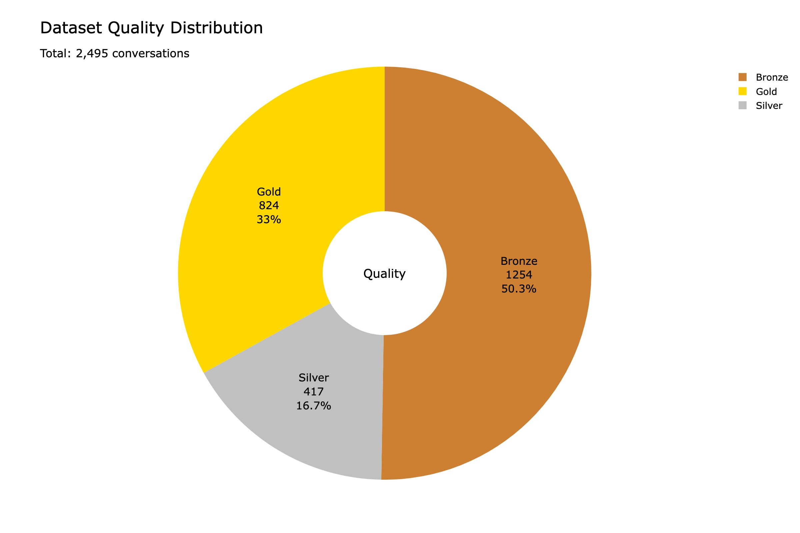
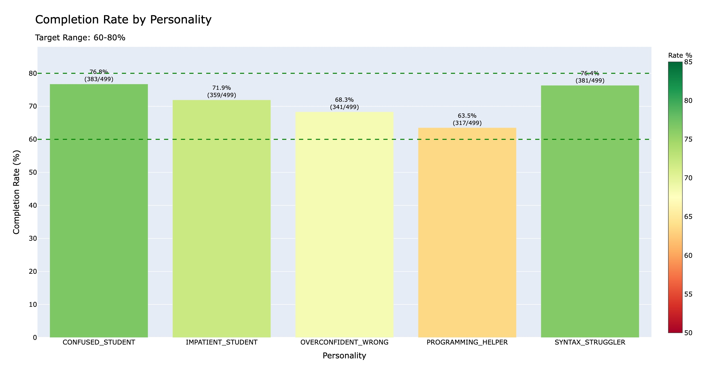
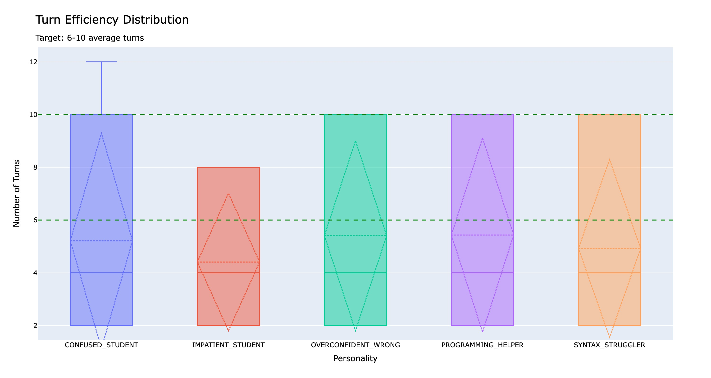
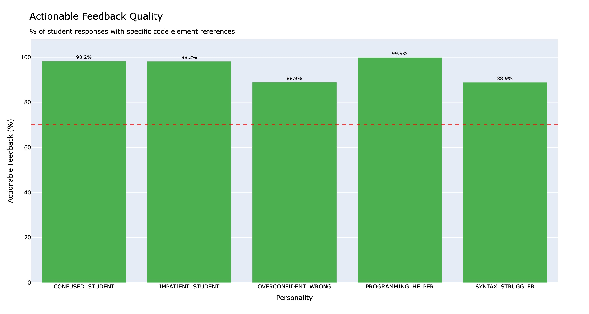
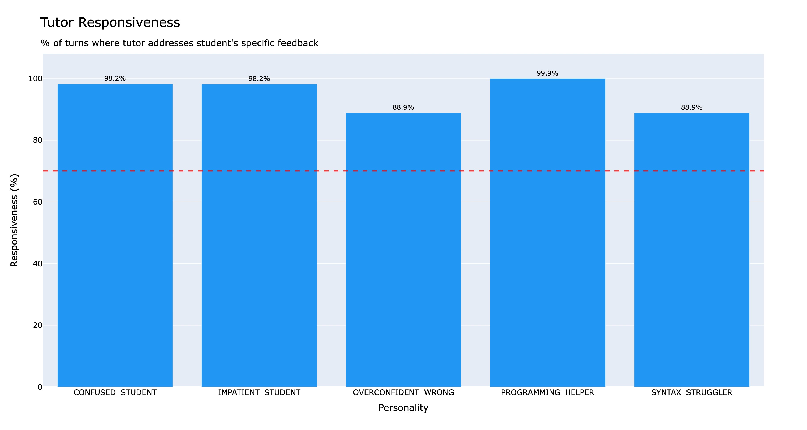
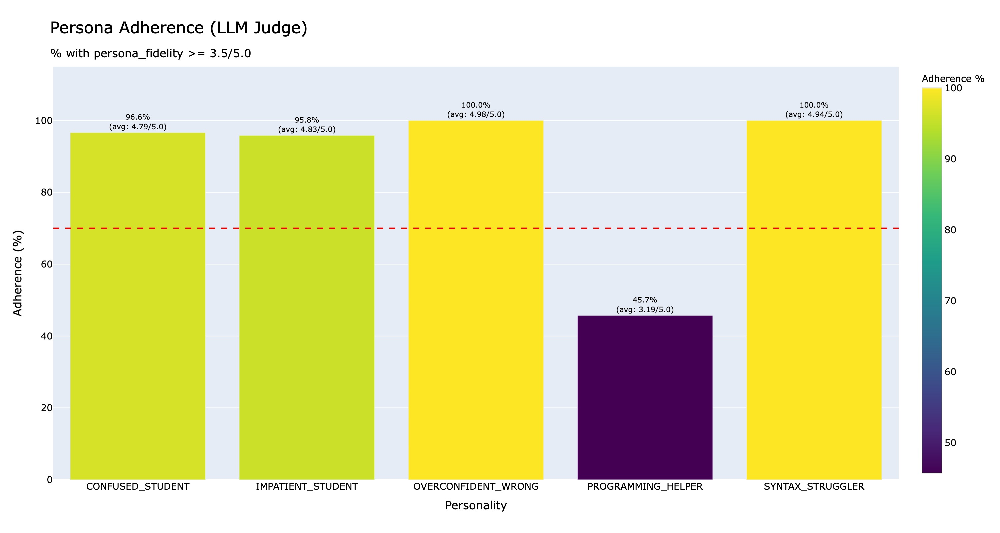
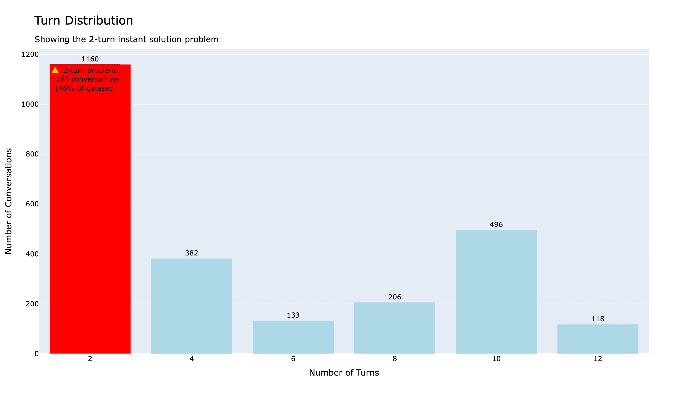
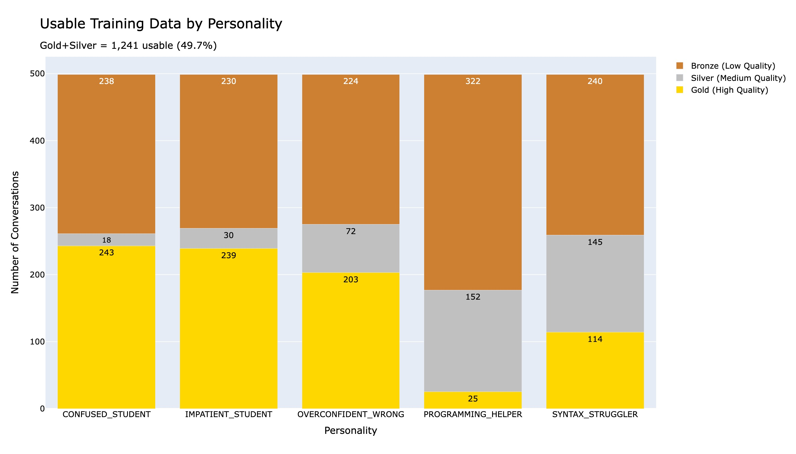
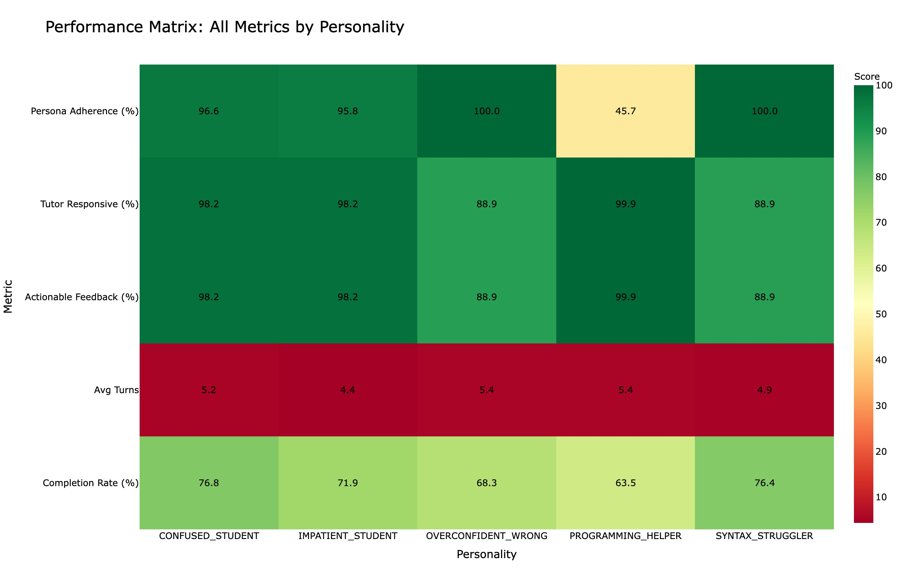

An autonomous multi-agent pipeline that simulates realistic student–tutor debugging sessions, executes every candidate solution against real tests, and grades each conversation with an LLM judge — producing high-signal data for fine-tuning coding tutors.
The flagship strategy1_11_02_2026-Golden release
contains 2,495 multi-turn debugging conversations. Each one is validated against pytest test cases
and scored 0–10 by an LLM judge on persona fidelity, tutor responsiveness, and dialog flow.
Two autonomous agents talk to each other. After each tutor response, the code is executed against real test cases; a router decides whether to keep debugging or stop. The loop runs until the solution passes or hits the turn limit.
One of 5 personalities asks a question or gives specific, code-referencing feedback.
Progressive refinement: deliberately incomplete early, complete later.
Runs the candidate code under pytest against hidden test cases.
Loops back to the student or ends when solved / max turns reached.
Scores the finished conversation and assigns gold / silver / bronze.
In naïve generation, ~46% of conversations were solved in just 2 turns — no collaboration, no signal. The tutor agent is now constrained turn-by-turn so the first drafts must fail, guaranteeing 4–6 turns of genuine back-and-forth.
| Turns | Max tokens | Temp | Instruction | Expected |
|---|---|---|---|---|
1–2 | 120 | 0.8 | 6–8 lines, ignore edge cases | Must fail tests |
3–4 | 300 | 0.6 | Fix only the issue the student named | Partial progress |
5+ | 500 | 0.3 | Handle all edge cases | Passes all tests |
Lost but specific about where.
Direct and demanding.
Arrogant, questions the tutor.
Fixated purely on syntax.
Expert who supplies fixes.
Every personality provides specific, code-referencing feedback — 94.8% of student turns name a concrete element (base case, loop, return, edge case).
Actual generated sessions from the golden dataset — including live execution results per turn.
Loading samples…
Nine visualizations track the health of the dataset across quality, completion, turn efficiency, feedback quality, and per-persona performance. Click any chart to enlarge.








